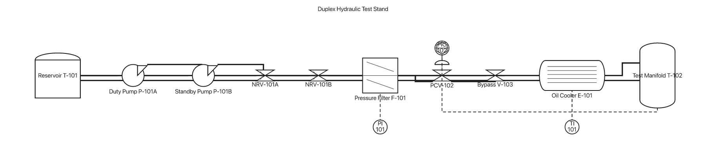
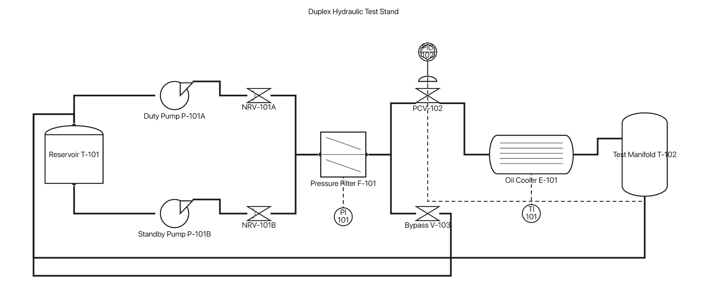
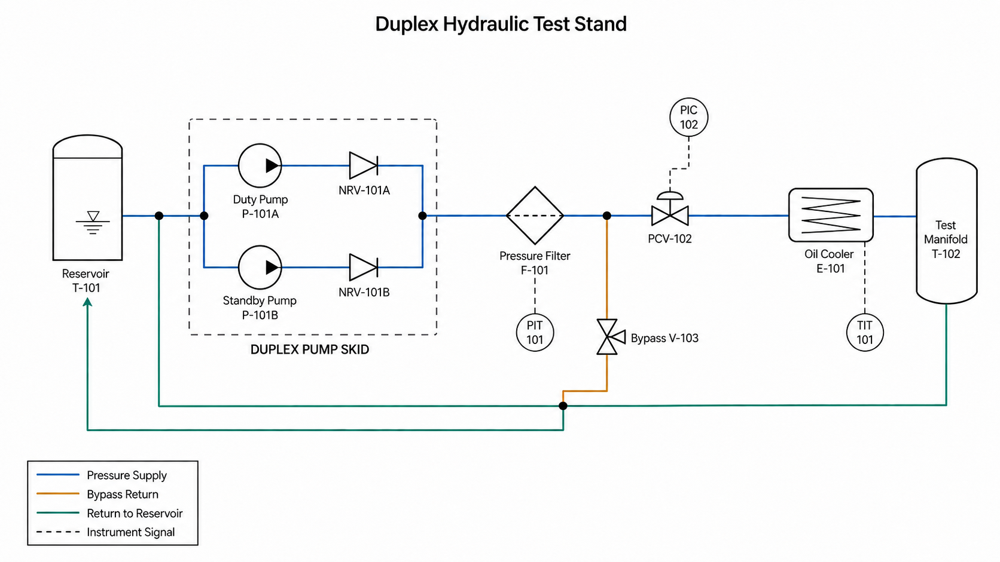

Duplex hydraulic test stand
A declaration-order layout turns two parallel pumps into a serial-looking chain. The target reads topology first: split, parallel lanes, merge, treatment, control, test, and return.

The symbols are recognizable, but the layout implies a process topology that is not true.

Graph ranks now expose the duplex lanes, merge, bypass, and return. Dedicated control-signal lanes remain the largest visual gap.

Parallel lanes, scope boundary, service paths, and signal ownership are visible before reading the labels.